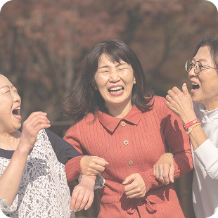
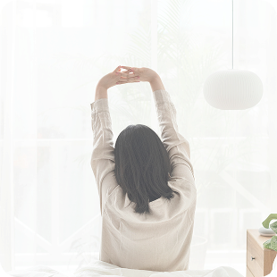

진심을 담다, 회복을 담다
몸과 마음의 변화를 섬세하게 이해하는
담아한의원의 여성 전문 치료,
증상만이 아닌 ‘원인’을 봅니다.
부산 유일의 여성 전문 한의원에서
진정한 회복을 경험하세요.
-
여성질환 클리닉
여성의 몸은 생애 주기마다 끊임없이 변화합니다.
담아한의원은 월경, 임신, 출산, 갱년기까지 여성의 흐름을 이해하는 한의학 치료를 제공합니다.-
생리통
·
생리불순 -
다낭성
·
호르몬 불균형 -
냉증
·
부종 -
갱년기
·
피로관리
-
-
산후·회복 클리닉
출산 후 회복은 빠름보다 올바름이 중요합니다.
담아한의원은 산모의 체력과 체질을 고려해 자연스러운 회복을 돕습니다.-
산후어혈
·
부종관리 -
체력 회복
·
면역력 강화 -
산후 다이어트
-
수면
·
컨디션 회복
-
-
피부·미용 클리닉
피부는 몸의 상태를 비추는 거울입니다.
담아한의원은 내면의 균형을 바로잡아 자연스럽고 건강한 피부 변화를 이끌어냅니다.-
여드름
·
트러블
-
기미
·
잡티
·
톤 개선 -
안면 홍조
-
피부 체질개선
-
한아름대표원장
37년간 여성 질환과 회복 치료를 중심으로
환자의 삶과 일상을 함께 고민해 왔습니다.
증상을 억제하기보다 스스로 회복할 수 있도록 돕는 것,
그것이 담아한의원이 지향하는 치료입니다.
FAQ
자주 묻는 질문
증상과 체질에 따라 복용 기간은 달라집니다.
담아한의원은 최소한의 기간으로
최대의 효과를 목표로 합니다.
일반적으로 출산 후 안정이 확인되면 상담 후 시작할 수 있습니다.
담아한의원은 피부 증상뿐 아니라 생활 습관과 체질을 함께 고려해 치료합니다.
일부 치료는 건강보험 적용이 가능합니다. 자세한 내용은 내원 시 문의해 주세요.
보다 원활한 진료를 위해 사전 예약을 권장드립니다. 당일 방문도 가능하나 대기 시간이 있을 수 있습니다.
담아한의원의 이야기
치료 사례, 건강 칼럼, 진료 철학 등
담아한의원의 소식과 한의학 이야기를 전합니다.
오시는 길
부산 유일 여성전문 한의원,
담아한 의원으로 오시는 방법을 안내해 드립니다.
부산 금정구 동부곡로 15번길 청암빌딩 1-2F
(부산대역 4번 출구 도보 5분)
전화상담
051.512.4304